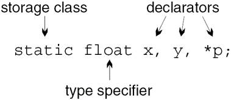
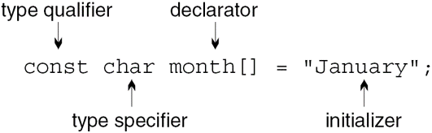
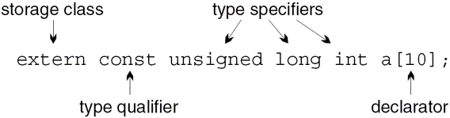
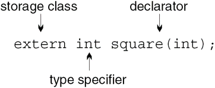
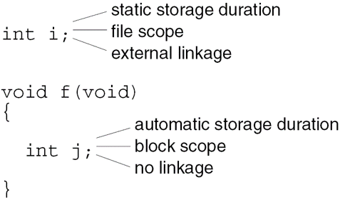
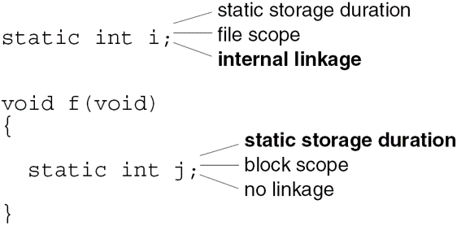
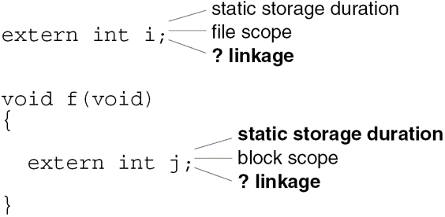
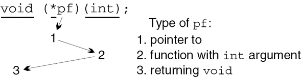
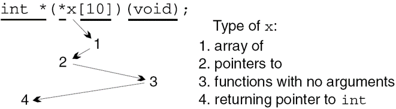

声明向编译器提供有关标识符含义的信息.
例子:
int i; float f(float);
声明的一般形式:
声明说明符 声明符;
声明说明符描述声明的变量或函数的性质.
声明符给出它们的名字, 并且可以提供关于其性质的额外信息.
声明说明符分为三类:
C99 有第四类, 即函数说明符, 它只用于函数声明.
类型限定符和类型说明符必须跟随在存储类型的后边, 但两者的顺序没有限制.
有四种存储类型: auto、static、extern和register.
一个声明中最多可以出现一种存储类型; 如果存储类型存在, 必须把它防止在最前面.
在 C89 中, 只有两种类型限定符: const和volatile .
C99 有第三种类型限定符, restrict.
一个声明可以包含零个或多个类型限定符.
关键字void、char、short、int、long、float、double、signed和unsigned都是类型说明符.
它们可以组合使用，顺序不重要.
类型说明符还包括结构、联合和枚举的说明.
struct point { int x, y; }, struct { int x, y; }, struct point.用typedef创建的类型名也是类型说明符.
声明符包括:
声明符之间用逗号分隔.
表示变量的声明符后面可以跟一个初始化式.
带有存储类型和三个声明符的声明:

带有类型限定符和初始化式但没有存储类型的声明:

带有存储类型、类型限定符和三个类型说明符的声明:

函数声明也有存储类型、类型限定符和类型说明符:

可以为变量以及较小作用域的函数和形式参数指定存储类型.
回想一下, 术语块是指函数体(大括号中的部分)或复合语句(可能包含声明).
C 程序中的每个变量都具有三个性质:
变量的存储期限决定了何时为变量预留内存以及何时释放该内存.
变量的作用域是可以引用该变量的那部分程序文本.
块作用域: 变量从其声明点到所在块的末尾都是可见的.
文件作用域: 变量从其声明点到所在文件的末尾都是可见的.
变量的链接决定了它可以共享的范围.
外部链接: 变量可以由程序中的多个(可能是全部)文件共享.
内部链接: 变量仅限于单个文件, 但可以由该文件中的函数共享.
无链接: 变量属于单个函数, 根本不能共享.
变量的默认存储期限、作用域和链接取决于它的声明位置:
块(包括函数体)内声明的变量具有自动存储期限、块作用域且无链接.
在程序的最外层(任何块外部)声明的变量具有静态存储期限、文件作用域和外部链接.
例子:

可以通过指定明确的存储类型来更改这些性质: auto、static、extern或register.
auto存储类型仅对属于块的变量有效.
auto变量具有自动存储期限、块作用域且无链接.
auto存储类型几乎从来不用明确指定.
static存储类型可以用于全部变量, 无论它们在哪里声明.
在块外使用时, static指定变量具有内部链接.
在块内使用时, static将变量的存储期限从自动更改为静态.
例子:

在块外使用时, static使变量只在声明它的文件内可见:
static int i; /* no access to i in other files */ void f1(void) { /* has access to i */ } void f2(void) { /* has access to i */ }
static的这种用法可以用来实现信息隐藏.
块内声明的static变量在整个程序执行过程中驻留在相同的存储位置.
static变量无限期地保留其值.
static变量的性质:
static变量只在程序执行之前进行一次初始化.
如果函数含有static变量, 此函数的所有调用共享这个static变量, 包括递归调用.
函数可以返回指向static变量的指针.
将局部变量声明为static允许函数在"隐藏"区域内的调用之间保留信息.
更经常的做法是用static来使程序更加有效:
char digit_to_hex_char(int digit) { static const char hex_chars[16] = "0123456789ABCDEF"; return hex_chars[digit]; }
hex_chars声明为static可以节省时间, 因为static变量只初始化一次.
extern存储类型允许多个源文件共享同一个变量.
extern的变量声明不会导致为变量分配内存:
extern int i;
用 C 术语来说, 这不是i的定义.
extern声明告诉编译器需要访问在别处定义的变量.
一个变量在程序中可以有很多声明, 但应该只有一个定义.
extern声明不是定义的规则有一个例外.
对变量进行初始化的extern声明是变量的定义.
例如, 声明
extern int i = 0;
等价于
int i = 0;
此规则防止多个extern声明以不同方式初始化变量.
extern声明中的变量始终具有静态存储期限.
如果声明在块内, 则变量具有块作用域; 否则, 它具有文件作用域:

确定extern变量的链接有点困难.
使用register存储类型要求编译器将变量存储在寄存器中.
寄存器是位于计算机 CPU 中的高速存储区域.
指定变量的存储类型是register是请求, 而不是命令.
编译器也可以选择将register型变量存储在内存中.
register存储类型仅对声明在块中的变量有效.
register变量与auto变量具有相同的存储期限、作用域和链接.
由于寄存器没有地址, 因此使用&运算符获取register变量的地址是非法的.
即使编译器选择将变量存储在内存中, 此限制也适用.
register最适合用于频繁访问或更新的变量.
for语句中的循环控制变量非常适合声明为register:
int sum_array(int a[], int n) { register int i; int sum = 0; for (i = 0; i < n; i++) sum += a[i]; return sum; }
register不像以前那么受欢迎.
今天的许多编译器可以自动确定哪些变量保存在寄存器中可以受益.
尽管如此, 使用register为编译器提供了有用的信息, 可以帮助优化程序的性能.
特别是, 编译器知道不能对register变量取地址, 因此不能通过指针进行修改.
函数声明(和定义)也可以包括存储类型.
但是选项只有extern和static:
extern说明该函数具有外部链接, 允许从其他文件调用它.
static说明是内部链接, 只能在定义它的文件内部调用此函数.
如果未指定存储类型, 则假定该函数具有外部链接.
例子:
extern int f(int i); static int g(int i); int h(int i);
使用extern是不必要的, 但static有好处:
更容易维护. static函数在其定义所在的文件之外不可见, 因此将来对该函数的修改不会影响其他文件.
减少"名称空间污染". static函数的名称不会与其他文件中使用的名称冲突.
函数的形式参数具有和auto变量相同的性质: 自动存储期限、块作用域和无链接.
唯一可以为形式参数指定的存储类型是register.
下面的代码段说明了在变量和形式参数的声明中包含或省略存储类的所有可能方法:
int a; extern int b; static int c; void f(int d, register int e) { auto int g; int h; static int i; extern int j; register int k; }
| 名字 | 存储期限 | 作用域 | 链接 |
|---|---|---|---|
| a | 静态 | 文件 | 外部 |
| b | 静态 | 文件 | 不确定 |
| c | 静态 | 文件 | 内部 |
| d | 自动 | 块 | 无 |
| e | 自动 | 块 | 无 |
| g | 自动 | 块 | 无 |
| h | 自动 | 块 | 无 |
| i | 静态 | 块 | 无 |
| j | 静态 | 块 | 不确定 |
| k | 自动 | 块 | 无 |
在大多数情况下, b和j将在另一个文件中定义并具有外部链接.
在四个存储类中, 最重要的是static和extern.
auto没有任何作用, 现代编译器已经让register变得不那么重要了.
有两种类型限定符: const和volatile .
volatile在第 20 章中讨论.
const用于声明"只读"对象.
例子:
const int n = 10; const int tax_brackets[] = {750, 2250, 3750, 5250, 7000};
将对象声明为const的优点:
看起来const与#define指令的作用相同, 但是这两个功能之间存在显着差异.
#define可用于为数字、字符或字符串常量创建名称, 但const可以创建任何类型的只读对象.
const对象受制于与变量相同的作用域规则; 使用#define创建的常量不是.
const对象的值与宏的值不同, 可以在调试器中查看.
与宏不同, const对象不能用于常量表达式:
const int n = 10; int [n]; /*** 错误的 ***/
对const对象应用&是合法的, 因为它有一个地址; 宏没有地址.
没有绝对规则规定何时使用#define以及何时使用const.
#define适用于表示数字或字符的常量.
在最简单的情况下, 声明符只是一个标识符:
int i;
声明符还可以包含符号*、[]和().
*开头的声明符代表一个指针:
int *p;
[]结尾的声明符表示一个数组:
int a[10];
如果存储类型为extern, 那么括号内可以为空:
extern int a[];
在多维数组中, 只有第一组括号可以为空.
C99为数组参数声明中括号之间的内容提供了两个附加选项:
第 9 章讨论了这两个特性.
()结尾的声明符表示函数:
int abs(int i); void swap(int *a, int *b); int find_largest(int a[], int n);
C 允许在函数声明中省略参数名称:
int abs(int); void swap(int *, int *); int find_largest(int [], int);
括号甚至可以留空:
int abs(); void swap(); int find_largest();
没有提供有关参数的信息.
这与将void放在括号内不同: void表示没有参数.
空括号样式不允许编译器检查函数调用是否具有正确的参数.
实际程序中的声明符通常结合*、[]和()符号.
一个包含 10 个整数指针的数组:
int *ap[10];
具有float参数并返回指向float的指针的函数:
float *fp(float);
指向具有int参数和void返回类型的函数的指针:
void (*pf)(int);
但是像以下声明中的声明符呢？
int *(*x[10])(void);
x是指针、数组还是函数并不明显.
理解声明的规则:
示例 1:
int *ap[10];
ap是一个指针数组.
示例 2:
float *fp(float);
fp是一个返回指针的函数.
示例 3:
void (*pf)(int);
由于*pf包含在圆括号中, 因此pf一定是指针.
(*pf)后面跟着(int), 所以pf一定指向一个带有int参数的函数.
单词void表示此函数的返回类型.
理解一个复杂的声明器经常需要从标识符的一边折返到另一边:

"之字形"的第二个例子:

某些内容不能在 C 中声明.
函数不能返回数组:
int f(int)[]; /*** 错误的 ***/
函数不能返回函数:
int g(int)(int); /*** 错误的 ***/
函数型数组也是不可能的:
int a[10](int); /*** 错误的 ***/
上述情况都可以使用指针来获得所需的效果.
例如, 函数不能返回数组, 但可以返回指向数组的指针.
一些程序员使用类型定义来简化复杂的声明.
假设x声明如下:
int *(*x[10])(void);
以下类型定义使x的类型更易于理解:
typedef int *Fcn(void); typedef Fcn *Fcn_ptr; typedef Fcn_ptr Fcn_ptr_array[10]; fcn_ptr_array x;
为方便起见, C 允许我们在声明变量时为变量指定初始值.
为了初始化变量, 可以在声明符之后书写=符号, 然后在它后面加上初始化式.
简单变量的初始化式是与变量类型相同的表达式:
int i = 5 / 2; /* i 最初是 2 */
如果类型不匹配, C 使用与赋值相同的规则转换初始化式:
int j = 5.5; /* 转换为 5 */
指针变量的初始化式必须是具有和变量相同类型或void *类型的表达式:
int *p = &i;
数组、结构或联合初始化式通常是用大括号括起来的一系列值:
int a[5] = {1, 2, 3, 4, 5};
在 C99 中, 由于指定初始化式的存在, 大括号括起来的初始化式可以有其他形式.
具有静态存储期限的变量的初始化式必须是常量:
#define FIRST 1 #define LAST 100 static int i = LAST - FIRST + 1;
如果LAST和FIRST是变量, 则初始化式将是非法的.
如果变量具有自动存储期限, 则其初始化式不必是常量:
int f(int n) { int last = n - 1; … }
数组、结构或联合的括起来的初始化式只能包含常量表达式:
#define N 2 int powers[5] = {1, N, N * N, N * N * N, N * N * N * N};
如果N是变量, 则初始化式将是非法的.
在 C99 中, 此限制仅适用于变量具有静态存储期限的情况.
自动类型的结构或联合的初始化式可以是另一个结构或联合:
void g(struct part part1) { struct part part2 = part1; … }
虽然初始化式需要是具有适当类型的表达式, 但是它们不需要一定是变量或参数名称.
变量的初始值取决于它的存储期限:
自动存储期限的变量没有默认初始值.
静态存储期限的变量默认情况下的值为零.
静态变量根据其类型正确初始化, 即整型变量初始化为0, 浮点变量初始化为0.0, 指针则初始化为空指针.
最好为静态变量提供初始化式, 而不依赖于它们一定为零的事实.
C99 函数声明可能包含关键字inline.
inline与函数调用的"开销"概念有关——调用函数并随后从函数返回所需的工作量.
尽管函数调用的开销只会使程序减慢一点点, 但在某些情况下它会产生累积效应.
在 C89 中, 避免函数调用开销的唯一方法是使用带参数的宏.
C99 为这个问题提供了一个更好的解决方案: 创建内联函数.
"内联"表明编译器将函数的每次调用替换为函数的机器指令.
这种方法可能会导致编译程序的大小略有增加.
将函数声明为内联实际上并不强制编译器"内联"该函数.
它建议编译器应尽可能快地调用函数, 但编译器可以忽略该建议.
内联函数将关键字inline作为其声明说明符之一:
inline double average(double a, double b) { return (a + b) / 2; }
average具有外部链接, 因此其他源文件可能包含average的调用.
但是, average的定义不是外部定义(而是内联定义).
尝试从另一个文件调用average将被视为错误.
有两种方法可以避免此错误.
一种选择是将单词static添加到函数定义中:
static inline double average(double a, double b) { return (a + b) / 2; }
average现在有内部链接, 所以不能从其他文件调用.
其他文件可能包含它们自己的average定义, 可能相同或不同.
为average提供外部定义, 以便允许从其他文件调用.
一种方法是再次编写average函数(不使用inline)并将此定义放在不同的源文件中.
但是, 拥有两个版本的函数并不是一个好主意: 我们不能保证在修改程序时它们会保持一致.
更好的方法是将average的内联定义放在头文件中:
#ifndef AVERAGE_H #define AVERAGE_H inline double average(double a, double b) { return (a + b) / 2; } #endif
将此文件命名为average.h.
接下来, 创建一个匹配的源文件average.c:
#include "average.h" extern double average(double a, double b);
任何需要调用average函数的文件只需要包含average.h.
average.h中包含的average定义在average.c中被视为外部定义.
一般规则: 如果文件中函数的所有顶层声明都包括inline但不包括extern, 则该文件中函数的定义是内联的.
如果该函数在程序中的其他位置使用, 则需要由其他文件提供该函数的外部定义.
当调用内联函数时, 编译器有一个选择:
执行正常调用(使用函数的外部定义).
执行内联展开(使用函数的内联定义).
因为选择权留给编译器, 所以两个定义保持一致至关重要.
刚刚讨论的方法(使用average.h和average.c文件)可以保证定义是相同的.
对具有外部链接的内联函数的限制:
不能定义可修改的static变量.
不能引用具有内部链接的变量.
这样的函数可以定义同时为static和const的变量.
但是, 函数的每个内联定义都需要创建自己的变量副本.
一些编译器, 包括 GCC, 在 C99 标准之前支持内联函数.
它们使用内联函数的规则可能与标准有所不同.
前面描述的方法(使用average.h和average.c文件)可能不适用于这些编译器.
预计 GCC 4.3 版将以 C99 标准中描述的方式支持内联函数.
无论 GCC 的版本如何, 被同时定义为static和inline的函数都应该可以正常工作.
这种策略在 C99 中也是合法的, 所以它是最安全的选择.
static inline函数可以在单个文件中使用, 也可以放在头文件中并包含在任何需要调用该函数的源文件中.
一种在多个文件之间共享内联函数的方法, 适用于旧版本的 GCC, 但与 C99 冲突:
将函数的定义放在头文件中.
指定函数既是extern又是inline.
将头文件包含到任何包含该函数调用的源文件中.
在其中一个源文件中再次给出该函数的定义(不包括extern和inline关键字).
关于 GCC 的最后一点说明: 仅当使用-O命令行选项请求优化时, 函数才会"内联".